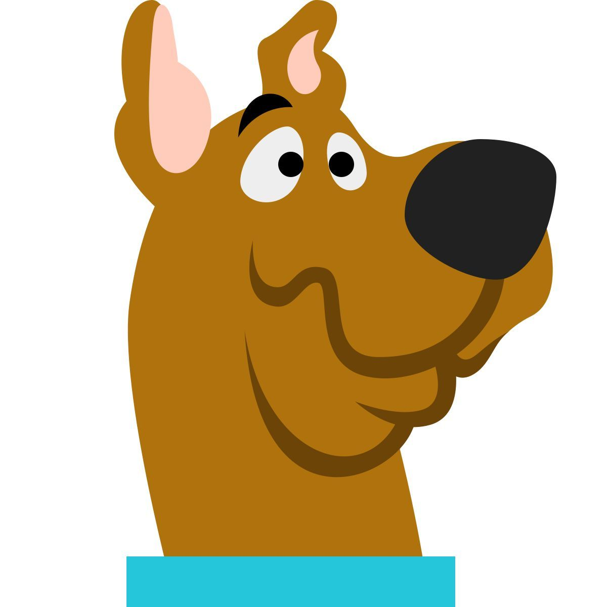

A Mistério S.A. decidiu criar um teste para descobrir com qual membro da equipe você mais se parece.
O programa deverá analisar características como:
Coragem, Inteligência, Curiosidade e Fome.
Com base nesses valores, o sistema deverá identificar se o usuário se
parece mais com:
Velma (Perfil analítico e inteligente),
Fred (Perfil líder e estratégico),
Daphne (Perfil aventureiro e elegante),
Salsicha ou
Scooby-Doo (Perfil medroso, mas leal e divertido).